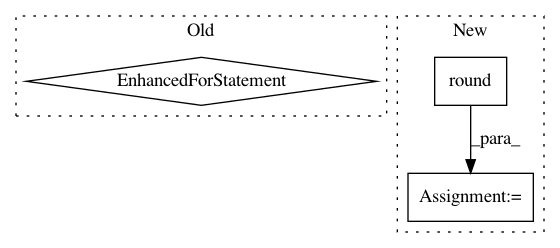

a092a5612c48a8a61c7d3deadf3749338ea4b64d,tests/test_regression.py,,check_linear_models,#,160
Before Change
// get the weights for this trained model
learned_weights = learner.model_params[0]
for feature_name in learned_weights:
learned_w = math.ceil(learned_weights[feature_name])
given_w = math.ceil(weightdict[feature_name])
eq_(learned_w, given_w)
// now generate the predictions on the test FeatureSet
predictions = learner.predict(test_fs)
// now make sure that the predictions are close to
// the actual test FeatureSet labels that we generated
After Change
for feature_name in learned_weights:
learned_w_ceil = math.ceil(learned_weights[feature_name])
given_w_ceil = math.ceil(weightdict[feature_name])
learned_w_round = round(learned_weights[feature_name], 0)
given_w_round = round(weightdict[feature_name], 0)
ceil_equal = learned_w_ceil == given_w_ceil
round_equal = learned_w_round == given_w_round
either_equal = ceil_equal or round_equal
In pattern: SUPERPATTERN
Frequency: 3
Non-data size: 3
Instances
Project Name: EducationalTestingService/skll
Commit Name: a092a5612c48a8a61c7d3deadf3749338ea4b64d
Time: 2019-02-20
Author: nmadnani@ets.org
File Name: tests/test_regression.py
Class Name:
Method Name: check_linear_models
Project Name: nilmtk/nilmtk
Commit Name: 059bae1586b88f8be0e1d7f98165ec53923e975e
Time: 2014-01-16
Author: jack-list@xlk.org.uk
File Name: nilmtk/preprocessing/electricity/single.py
Class Name:
Method Name: insert_zeros
Project Name: fabianp/mord
Commit Name: 407a5112ab430db6f23fc4317a7400ada797d274
Time: 2015-10-21
Author: f@bianp.net
File Name: examples/bench.py
Class Name:
Method Name: